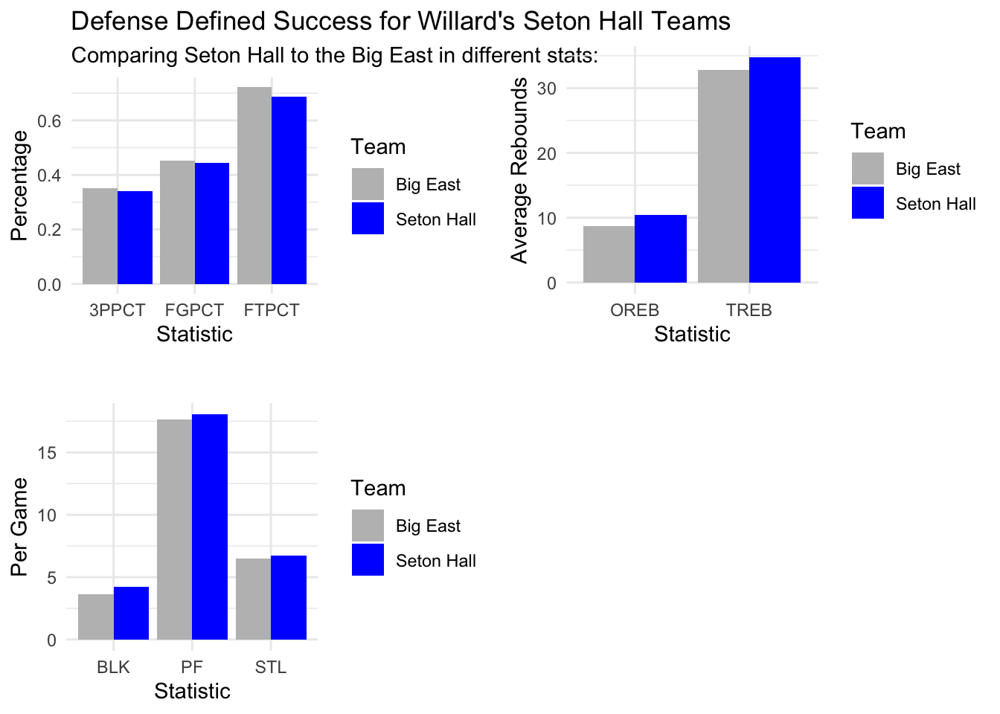
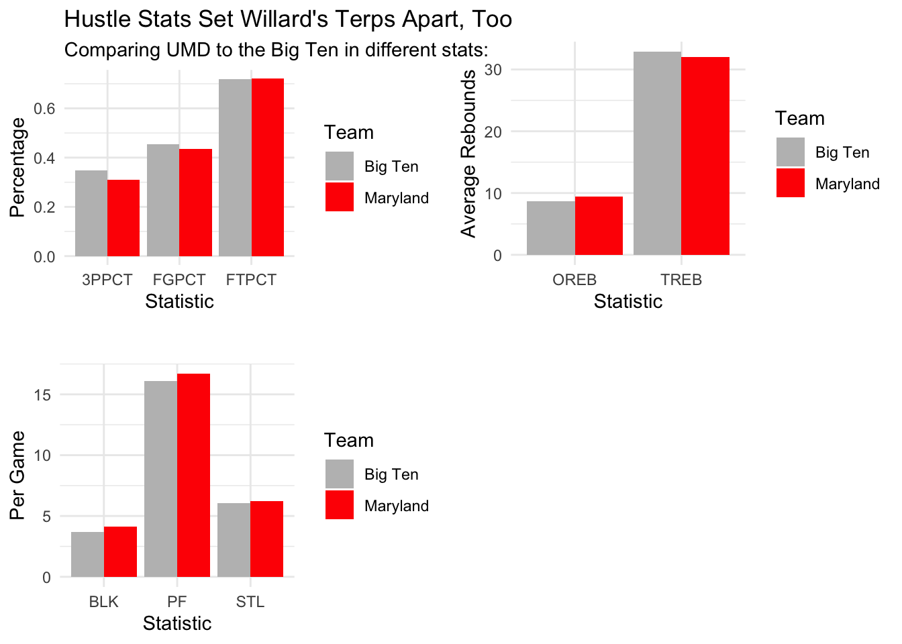

The Willard Way - Old School; Analyzing the UMD Basketball Coach’s Style
basketball
Maryland
Kevin Willard
Author
Sam Benning
Published
November 13, 2024
We might not have any clue where our Maryland Men’s basketball team stands currently in terms of how good we actually are. Some may say we’re a solid tournament team, others see a middling Big Ten squad. Regardless, all of our fans want success. In order to do so, we need some sense of culture, and who else would we look to for that but our Head Coach, Kevin Willard.
In the past 8 years, 6 of his teams have earned March Madness bids. I’d say he’s solidified himself as a staple of our program at Maryland. But what does a Kevin Willard culture look like? Can we define it? Is it represented statistically? In today’s blog post, we will see what has been reflected in Kevin Willard’s teams over time, including his time as Seton Hall (2010-2022). The dataset that we use contains college basketball game logs from 2014 to now.
Before I went into the data, I decided to inquire about Coach Willard with a former basketball coach of mine who was a team manager at Seton Hall from 2017-2021. He told me that the goal of Willard’s program at Seton Hall was to create “40 minutes of hell” for opponents. It was described by he and other managers as a defense-first team that played aggressive against the ball and fast on both ends. Offensively, his strategy/ability was described as “subpar,” which was masked by star scorers like Consensus All-American/Big East POY Myles Powell. In terms of his two (and counting) years at Maryland, I’d say we’ve seen somewhat of the same. Our defense usually keeps us in big games, and our offense outside of now-NBA prospect Jahmir Young was pretty mediocre. Well, let’s see what else we can find in the data.
Code
library(tidyverse)
── Attaching core tidyverse packages ──────────────────────── tidyverse 2.0.0 ──
✔ dplyr 1.1.4 ✔ readr 2.1.5
✔ forcats 1.0.0 ✔ stringr 1.5.1
✔ ggplot2 3.5.1 ✔ tibble 3.2.1
✔ lubridate 1.9.3 ✔ tidyr 1.3.1
✔ purrr 1.0.2
── Conflicts ────────────────────────────────────────── tidyverse_conflicts() ──
✖ dplyr::filter() masks stats::filter()
✖ dplyr::lag() masks stats::lag()
ℹ Use the conflicted package (<http://conflicted.r-lib.org/>) to force all conflicts to become errors
Rows: 110084 Columns: 47
── Column specification ────────────────────────────────────────────────────────
Delimiter: ","
chr (7): Season, Opponent, HomeAway, W_L, URL, Conference, Team
dbl (39): Game, TeamScore, OpponentScore, TeamFG, TeamFGA, TeamFGPCT, Team3...
date (1): Date
ℹ Use `spec()` to retrieve the full column specification for this data.
ℹ Specify the column types or set `show_col_types = FALSE` to quiet this message.
bigeastw <- ncaahoops |>filter(Conference =="Big East"| Conference =="Big East MBB") |>filter(year<=2022)bigtenw <- ncaahoops |>filter(Conference =="Big Ten MBB") |>filter(year >=2023)
In the above code, we have created new dataframes that will be the basis of our comparison, separating the teams and conferences that we want that Kevin Willard coached for and against.
Essentially what I am doing in the below code is scaling all of the (numeric) data in terms of the average for the Big Ten and Big East respectively during Willard’s era. We are going to look at how his teams have done compared to their conferences.
Code
# Identify numeric columns, excluding "Game" and "year"numeric_columns <-sapply(bigeastw, is.numeric) &!(names(bigeastw) %in%c("Game", "year"))# Make a copy of the original data and apply scalingscaled_bew <- bigeastwscaled_bew[numeric_columns] <-scale(bigeastw[numeric_columns])
Code
# Identify numeric columns, excluding "Game" and "year"numeric_bt <-sapply(bigtenw, is.numeric) &!(names(bigtenw) %in%c("Game", "year"))# Make a copy of the original data and apply scalingscaled_bt <- bigtenwscaled_bt[numeric_bt] <-scale(bigtenw[numeric_bt])
We can now see that every stat is comparative to its average.
Now we’ve just combined the two separate datasets from the entire Big East conference and Seton Hall individually. We can look at them together (we will visualize these soon).
Code
# Combine Seton Hall and conference datash_shooting_comp <-bind_rows(seton_hall_shooting, bigeast_shooting)# Reshape data to long format for ggplotsh_comparison_long <- sh_shooting_comp %>%pivot_longer(cols =c(FGPCT, `3PPCT`, FTPCT),names_to ="Statistic",values_to ="Value")head(sh_shooting_comp)
# A tibble: 2 × 4
FGPCT `3PPCT` FTPCT Team
<dbl> <dbl> <dbl> <chr>
1 0.444 0.341 0.687 Seton Hall
2 0.451 0.350 0.722 Big East
Code
shfg <-ggplot(sh_comparison_long, aes(x = Statistic, y = Value, fill = Team)) +geom_bar(stat ="identity", position =position_dodge()) +labs(title ="Defense Defined Success for Willard's Seton Hall Teams", subtitle ="Comparing Seton Hall to the Big East in different stats:",y ="Percentage",x ="Statistic") +scale_fill_manual(values =c("Seton Hall"="blue", "Big East"="gray")) +theme_minimal()
# Combine Seton Hall and conference rebound datash_rebounds_comp <-bind_rows(seton_hall_rebounds, bigeast_rebounds)# Reshape data to long format for ggplotsh_rebounds_long <- sh_rebounds_comp %>%pivot_longer(cols =c(OREB, TREB),names_to ="Statistic",values_to ="Value")
Code
shreb <-ggplot(sh_rebounds_long, aes(x = Statistic, y = Value, fill = Team)) +geom_bar(stat ="identity", position =position_dodge()) +labs(title ="",y ="Average Rebounds",x ="Statistic") +scale_fill_manual(values =c("Seton Hall"="blue", "Big East"="gray")) +theme_minimal()
Now defense:
Code
# Calculate Big East averages for TeamSteals, TeamBlocks, and TeamPersonalFouls, excluding Seton Hallbigeast_defense <- bigeastw %>%filter(Team !="Seton Hall") %>%summarise(STL =mean(TeamSteals, na.rm =TRUE),BLK =mean(TeamBlocks, na.rm =TRUE),PF =mean(TeamPersonalFouls, na.rm =TRUE) ) %>%mutate(Team ="Big East")# Calculate Seton Hall’s averages for the same variablesseton_hall_defense <- bigeastw %>%filter(Team =="Seton Hall") %>%summarise(STL =mean(TeamSteals, na.rm =TRUE),BLK =mean(TeamBlocks, na.rm =TRUE),PF =mean(TeamPersonalFouls, na.rm =TRUE) ) %>%mutate(Team ="Seton Hall")
Code
# Combine Seton Hall and conference defense datash_defense_comp <-bind_rows(seton_hall_defense, bigeast_defense)# Reshape data to long format for ggplotsh_defense_long <- sh_defense_comp %>%pivot_longer(cols =c(STL, BLK, PF),names_to ="Statistic",values_to ="Value")
Code
shdef <-ggplot(sh_defense_long, aes(x = Statistic, y = Value, fill = Team)) +geom_bar(stat ="identity", position =position_dodge()) +labs(title ="",y ="Per Game",x ="Statistic") +scale_fill_manual(values =c("Seton Hall"="blue", "Big East"="gray")) +theme_minimal()
Now that we have what we want for Seton Hall vs. the Big Eastl, we’ll do the same for Maryland versus the Big Ten:
# Reshape data for ggplotmd_comparison_long <- md_vs_bigten %>%pivot_longer(cols =c(FGPCT, `3PPCT`, FTPCT, OREB, TREB, STL, BLK, PF),names_to ="Statistic",values_to ="Value")
Code
# Shooting stats plotmd_shooting <-ggplot(md_comparison_long %>%filter(Statistic %in%c("FGPCT", "3PPCT", "FTPCT")),aes(x = Statistic, y = Value, fill = Team)) +geom_bar(stat ="identity", position =position_dodge()) +labs(title ="Hustle Stats Set Willard's Terps Apart, Too", subtitle ="Comparing UMD to the Big Ten in different stats:",y ="Percentage", x ="Statistic") +scale_fill_manual(values =c("Maryland"="red", "Big Ten"="gray")) +theme_minimal()# Rebounding stats plotmd_rebounds <-ggplot(md_comparison_long %>%filter(Statistic %in%c("OREB", "TREB")),aes(x = Statistic, y = Value, fill = Team)) +geom_bar(stat ="identity", position =position_dodge()) +labs(title ="",y ="Average Rebounds", x ="Statistic") +scale_fill_manual(values =c("Maryland"="red", "Big Ten"="gray")) +theme_minimal()# Defensive stats plotmd_defense <-ggplot(md_comparison_long %>%filter(Statistic %in%c("STL", "BLK", "PF")),aes(x = Statistic, y = Value, fill = Team)) +geom_bar(stat ="identity", position =position_dodge()) +labs(title ="",y ="Per Game", x ="Statistic") +scale_fill_manual(values =c("Maryland"="red", "Big Ten"="gray")) +theme_minimal()
Code
library(cowplot)
Attaching package: 'cowplot'
The following object is masked from 'package:lubridate':
stamp
Code
plot_grid(shfg, shreb, shdef)

Code
plot_grid(md_shooting, md_rebounds, md_defense)

When we look at these together, it tells us a few things about Kevin Willard’s teams over the years. First: I see a lot of average. Even after looking through the data manually, these were the some of the most drastic differences by his teams compared to the conference average.
With Seton Hall, his team excelled around the rim - offensive rebounding and rim protection set them apart on the defensive end. Otherwise, they had an average offensive scheme, which, as we mentioned, may have been kept afloat by a star player or two.
Willard’s Maryland teams have been highlighted with poor 3PT shooting but an above average defense. Boy, there have been a few guys on his Maryland teams that I think Shaq could shoot better than from deep, and yet he still let them shoot.
Overall, if we had to define the “Willard Way,” I would say the Seton Hall managers were spot on. Through these stats, I see a more hard-nosed, old-school style of basketball. He may not have all of the most skilled players on the floor at all times, so his teams must find a way to win in other ways than just skill, like simply trying to outwork their opponent. In terms of the eye test, from watching Maryland games I would say that Coach Willard’s basketball is more position-based than the other positionless teams in the rest of the NCAA. Again, since many of his players aren’t the “all-around” type like we see in modern basketball where everyone can shoot/defend/handle, each player fits into a role. As we discussed in class, I’m sure this core part of his philosophy has held true through his years, as he unfortunately hasn’t coached many immensely talented teams. His new class of players this year is led by future NBA lottery pick Derik Queen, but also has a good balance of talent and depth across the board. I’m curious to see if his style will adapt to fit these different types of players who can shoot and handle more. Will it be a blessing or a curse to have this new task?
Special thanks to my old coach and his team for providing their insight.